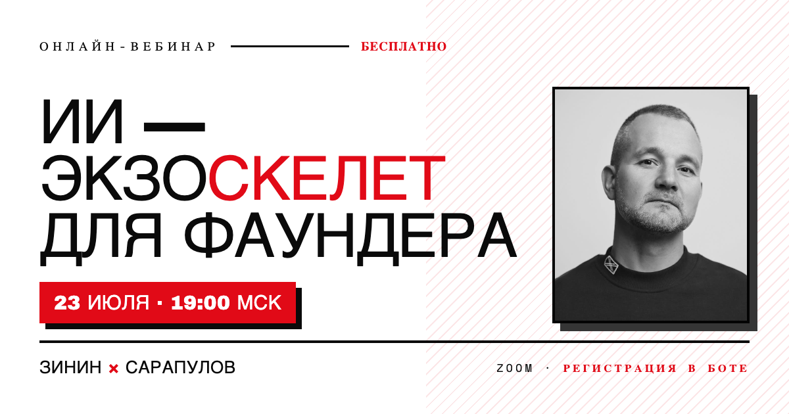

Онлайн-вебинарБесплатно
ИИ — экзоскелет
для фаундера
Как один основатель с ИИ делает работу целого отдела — продажи, контент, операционку — без раздувания штата. Разбираем на живых примерах, а не на слайдах.

23 июля · 19:00 МСК
Формат: Zoom
Цена: 0 ₽
Ведут: Зинин × Сарапулов
Что заберёте
- 01Какие задачи фаундера ИИ уже закрывает сегодня — и с чего начать, чтобы увидеть результат за неделю, а не «когда-нибудь».
- 02Как собрать своего первого рабочего агента: не игрушку после демо, а то, что реально крутится в проде каждый день.
- 03Где ИИ экономит деньги, а где сжигает — честно про границы, безопасность данных и типичные ошибки внедрения.
Записаться на вебинар
→ Регистрация в Telegram
Нажмите «Записаться» в боте — пришлём ссылку на Zoom и напомним перед стартом.